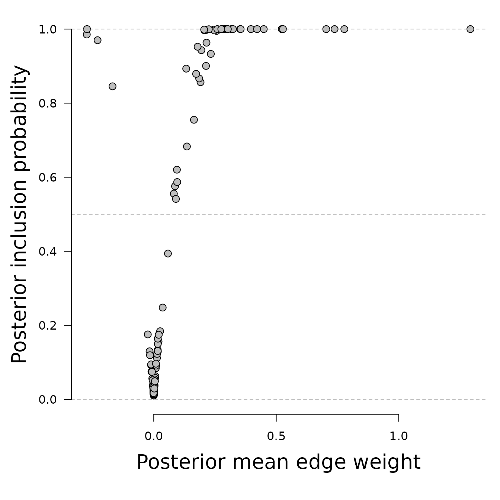
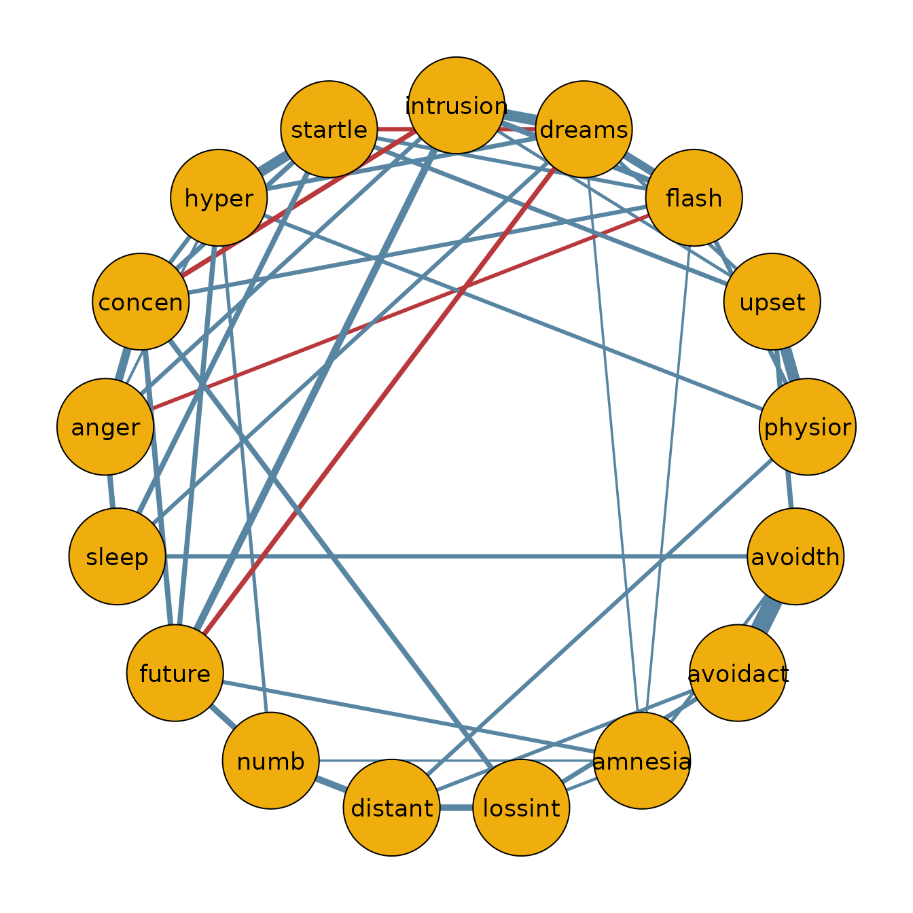
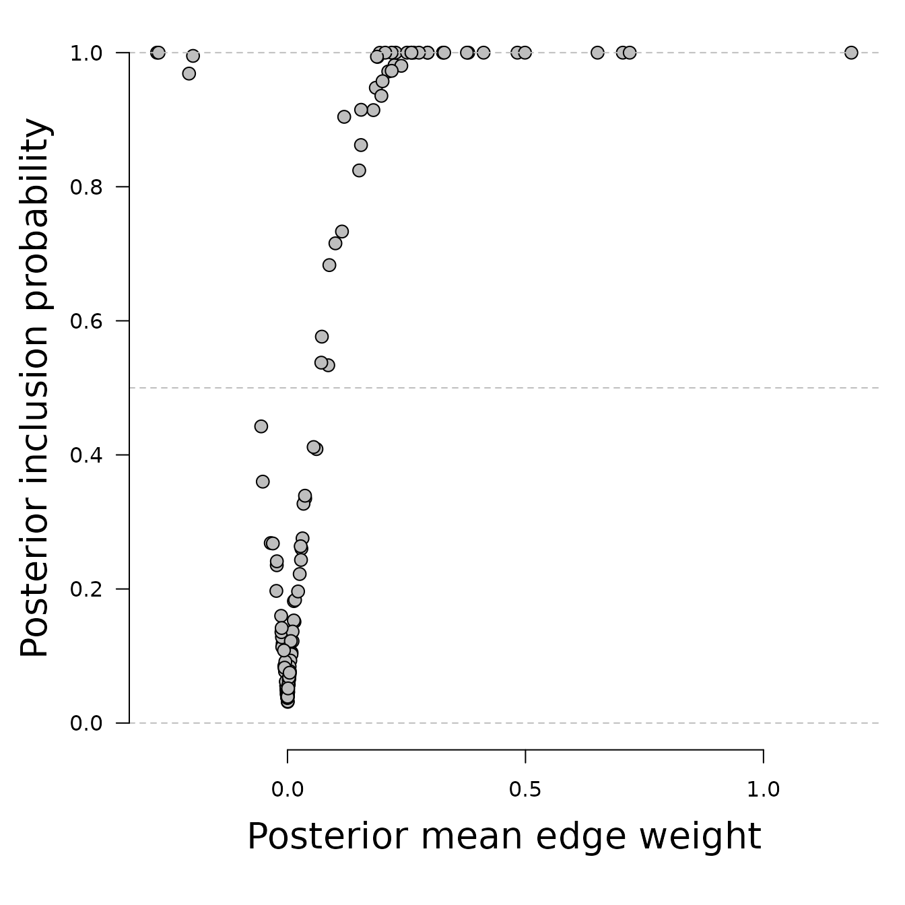
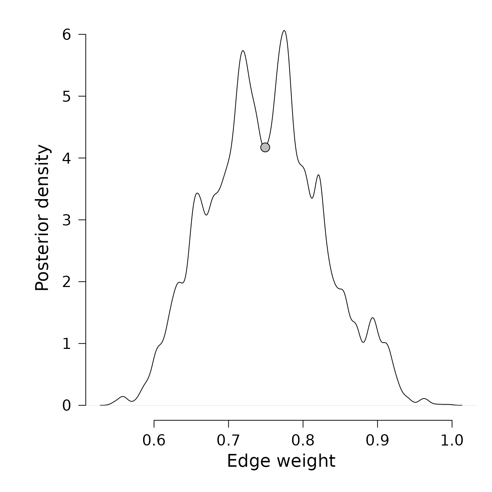

Bayesian analysis of networks of binary and/or ordinal variables using the bgm function
Source:vignettes/introduction.Rmd
introduction.RmdIntroduction
This example demonstrates how to use the bgm function
for the Bayesian analysis of a networks of binary and/or ordinal data
(i.e., a Markov Random Field (MRF) model for mixed binary and ordinal
data). To learn more about the MRF model, check out Marsman et al. (in press), and to
learn more about the Bayesian analysis of network models, check out
Huth et al. (2023) or Sekulovski et al. (2024).
We’ll examine real data on PTSD symptoms from 362 Chinese adults who survived the Wenchuan earthquake but tragically lost a child (McNally et al., 2015). The data comes from a 17-question survey where participants rated how much each symptom bothered them in the past month on a scale from “not at all” to “extremely.”
Example – Bayesian Model Averaging
A comprehensive Bayesian analysis of the data considers both the
network structure and its corresponding parameters. As numerous
structures could underlie our network, we employ simulation-based
methods to investigate the posterior distribution of network structures
and parameters (Marsman et al., in
press). The bgm function performs this task,
iteratively simulating values from the posterior distribution of network
structures and parameters.
Usage
bgm(x,
variable_type = "ordinal",
reference_category,
iter = 1e4,
burnin = 1e3,
interaction_scale = 2.5,
threshold_alpha = 0.5,
threshold_beta = 0.5,
edge_selection = TRUE,
edge_prior = c("Bernoulli", "Beta-Bernoulli", "Stochastic-Block"),
inclusion_probability = 0.5,
beta_bernoulli_alpha = 1,
beta_bernoulli_beta = 1,
dirichlet_alpha = 1,
na.action = c("listwise", "impute"),
save = FALSE,
display_progress = TRUE)Arguments
x: A data frame or matrix withnrows andpcolumns, containing binary and ordinal variables fornindependent observations andpvariables in the network. Regular binary and ordinal variables are recoded as non-negative integers (0, 1, …, m) if not already done. Unobserved categories are collapsed into other categories after recoding (i.e., if category 1 is unobserved, the data will be recoded from (0, 2) to (0, 1)). Blume-Capel ordinal variables are also coded as non-negative integers if not already done. However, since ``distance’’ to the reference category plays an important role in this model, unobserved categories are not collapsed after recoding.variable_type: What kind of variables are there inx? Can be a single character string specifying the variable type of allpvariables at once or a vector of character strings of lengthpspecifying the type for each variable inxseparately. Currently, bgm supports “ordinal” and “blume-capel”. Binary variables are automatically treated as “ordinal”. Defaults tovariable_type = "ordinal".reference_category: The reference category in the Blume-Capel model. Should be an integer within the range of integer scores observed for the “blume-capel” variable. Can be a single number specifying the reference category for all Blume-Capel variables at once, or a vector of lengthpwhere thei-th element contains the reference category for variableiif it is Blume-Capel, and bgm ignores its elements for other variable types. The value of the reference category is also recoded when bgm recodes the corresponding observations. Only required if there is at least one variable of type “blume-capel”.iter: How many iterations should the Gibbs sampler run? The default of1e4is for illustrative purposes. For stable estimates, it is recommended to run the Gibbs sampler for at least1e5iterations.burnin: The number of iterations of the Gibbs sampler before its output is saved. Since it may take some time for the Gibbs sampler to converge to the posterior distribution, it is recommended not to set this number too low.interaction_scale: The scale of the Cauchy distribution that is used as prior for the pairwise interaction parameters. Defaults to2.5.threshold_alpha, threshold_beta: The shape parameters of the beta-prime prior density for the threshold parameters. Must be positive values. If the two values are equal, the prior density is symmetric about zero. Ifthreshold_betais greater thanthreshold_alpha, the distribution is skewed to the left, and ifthreshold_betais less thanthreshold_alpha, it is skewed to the right. Smaller values tend to lead to more diffuse prior distributions.edge_selection: Should the function perform Bayesian edge selection on the edges of the MRF in addition to estimating its parameters (edge_selection = TRUE), or should it just estimate the parameters (edge_selection = FALSE)? The default isedge_selection = TRUE.edge_prior: The prior distribution for the edges or structure of the network. Two prior distributions are currently implemented: The Bernoulli modeledge_prior = "Bernoulli"assumes that the probability that an edge between two variables is included is equal toinclusion_probabilityand independent of other edges or variables. Wheninclusion_probability = 0.5, this implies that each network structure receives the same prior weight. The Beta-Bernoulli modeledge_prior = "Beta-Bernoulli"assumes a beta prior for the unknown inclusion probability with shape parametersbeta_bernoulli_alphaandbeta_bernoulli_beta. Ifbeta_bernoulli_alpha = 1andbeta_bernoulli_beta = 1, this means that networks with the same complexity (number of edges) receive the same prior weight. Defaults to `edge_prior = “Bernoulli”’. The Stochastic Block model assumes that nodes can be organized into blocks or clusters. In principle, the assignment of nodes to such clusters is unknown, and the model as implemented here considers all possible options (i.e., specifies a Dirichlet process on the node to block allocation Geng et al. (2019)). This model is advantageous when nodes are expected to fall into distinct clusters. The inclusion probabilities for the edges are defined at the level of the clusters, with a beta prior for the unknown inclusion probability with shape parameters and . The default is .inclusion_probability: The prior edge inclusion probability for the Bernoulli model. Can be a single probability, or a matrix ofprows andpcolumns specifying an inclusion probability for each edge pair. Defaults toinclusion_probability = 0.5.beta_bernoulli_alpha, beta_bernoulli_beta: The two shape parameters of the Beta prior density for the Bernoulli inclusion probability. Must be positive numbers. Defaults tobeta_bernoulli_alpha = 1andbeta_bernoulli_beta = 1.dirichlet_alpha: The shape of the Dirichlet prior on the node-to-block allocation parameters for the Stochastic Block model. Must be a positive number. Defaults todirichlet_alpha = 1na.action: How do you want the function to handle missing data? Ifna.action = "listwise", listwise deletion is used. Ifna.action = "impute", missing data are imputed iteratively during the MCMC procedure. Since imputation of missing data can have a negative impact on the convergence speed of the MCMC procedure, it is recommended to run the MCMC for more iterations. Also, since the numerical routines that search for the mode of the posterior do not have an imputation option, the bgm function will automatically switch tointeraction_prior = "Cauchy"andadaptive = TRUE.save: Should the function collect and return all samples from the Gibbs sampler (save = TRUE)? Or should it only return the (model-averaged) posterior means (save = FALSE)? Defaults to FALSE.display_progress: Should the function show a progress bar (display_progress = TRUE)? Or not (display_progress = FALSE)? Defaults to TRUE.
Output
If save = FALSE (the default), the result is a list
containing the following matrices:
-
indicator: A matrix withprows andpcolumns, containing posterior inclusion probabilities of individual edges. -
interactions: A matrix withprows andpcolumns, containing model-averaged posterior means of the pairwise associations. -
thresholds: A matrix withprows andmax(m)columns, containing model-averaged category thresholds.
If save = TRUE, the result is a list containing:
-
indicator: A matrix withiterrows andp * (p - 1) / 2columns, containing the edge inclusion indicators from every iteration of the Gibbs sampler. -
interactions: A matrix withiterrows andp * (p - 1) / 2columns, containing parameter states from every iteration of the Gibbs sampler for the pairwise associations. -
thresholds: A matrix withiterrows andsum(m)columns, containing parameter states from every iteration of the Gibbs sampler for the category thresholds.
Column averages of these matrices provide the model-averaged posterior means.
Analysis
fit <- bgm(x = Wenchuan)To save time, we ran the algorithm using the default number of iterations, which is 10,000. However, this is probably not enough to fully explore the posterior distribution of the network structures and parameters. To obtain reliable and accurate estimates, we recommend increasing the number of iterations to 100,000 or more.
The function employs a simulation method that averages over all plausible network structures to estimate the posterior inclusion probability, which represents the probability that a network containing the edge in question generated the observed data. Let’s plot the relation between interaction estimates and inclusion probabilities.
par(mar = c(6, 5, 1, 1))
plot(x = fit$interactions[lower.tri(fit$interactions)],
y = fit$indicator[lower.tri(fit$indicator)], ylim = c(0, 1),
xlab = "", ylab = "", axes = FALSE, pch = 21, bg = "gray", cex = 1.3)
abline(h = 0, lty = 2, col = "gray")
abline(h = 1, lty = 2, col = "gray")
abline(h = .5, lty = 2, col = "gray")
mtext("Posterior mean edge weight", side = 1, line = 3, cex = 1.7)
mtext("Posterior inclusion probability", side = 2, line = 3, cex = 1.7)
axis(1)
axis(2, las = 1)
We see that estimated edge weights (interactions) near zero have low
inclusion probabilities, and that edge weights far from zero have high
inclusion probabilities. A zero inclusion probability corresponds to
bgm setting the edge weight to exactly zero.
Median probability network
Using the posterior inclusion probabilities, we can also identify the
median probability network. In this network, we include all edges with a
posterior inclusion probability greater than 0.5. We can
create the median probability model as follows.
library(qgraph) #For plotting the estimated network
posterior.inclusion <- fit$indicator[lower.tri(fit$indicator)]
tmp <- fit$interactions[lower.tri(fit$interactions)]
tmp[posterior.inclusion < 0.5] = 0
median.prob.model <- matrix(0, nrow = ncol(Wenchuan), ncol = ncol(Wenchuan))
median.prob.model[lower.tri(median.prob.model)] <- tmp
median.prob.model <- median.prob.model + t(median.prob.model)
rownames(median.prob.model) <- colnames(Wenchuan)
colnames(median.prob.model) <- colnames(Wenchuan)
qgraph(median.prob.model,
theme = "TeamFortress",
maximum = .5,
fade = FALSE,
color = c("#f0ae0e"), vsize = 10, repulsion = .9,
label.cex = 1.1, label.scale = "FALSE",
labels = colnames(Wenchuan))
Inclusion Bayes factors
One of the benefits of using a fully Bayesian approach is that it allows us to calculate the inclusion Bayes factor Huth et al. (2023). The inclusion Bayes factor represents the relative evidence for including or excluding a connection between a pair of nodes in the network. An inclusion Bayes factor of 10 suggests that the observed data is ten times more likely to have come from a network that includes the relationship. Conversely, an inclusion Bayes factor of 1/10 implies that the observed data is ten times more likely to have come from a network that excludes the relationship. It’s important to note that inclusion Bayes factors can also reveal limited support for either hypothesis.
In the current version analysis, it is assumed that the prior
inclusion probabilities are equal to 0.5. Users can change
this by either adapting inclusion_probability or to choose
edge_prior = "Beta-Bernoulli" and pick different values for
beta_bernoulli_alpha and beta_bernoulli_beta.
Since here the inclusion probability is 0.5, the prior odds
for inclusion vs exclusion is one. To calculate the inclusion Bayes
factors, we can thus simply convert the estimated posterior inclusion
probabilities. For easier visualization, it is common to use the natural
logarithm of the Bayes factor when plotting.
# Calculate the inclusion BFs
prior.odds = 1
posterior.inclusion = fit$indicator[lower.tri(fit$indicator)]
posterior.odds = posterior.inclusion / (1 - posterior.inclusion)
log.bayesfactor = log(posterior.odds / prior.odds)
#The next line is used to truncate the extreme values of the Bayes factor in the plot
log.bayesfactor[log.bayesfactor > 5] = 5Lets plot the relation between the estimated edge weights and the inclusion Bayes factor.
par(mar = c(5, 5, 1, 1) + 0.1)
plot(fit$interactions[lower.tri(fit$interactions)], log.bayesfactor, pch = 21, bg = "#bfbfbf",
cex = 1.3, axes = FALSE, xlab = "", ylab = "", ylim = c(-5, 5.5),
xlim = c(-0.5, 1.5))
axis(1)
axis(2, las = 1)
abline(h = log(1/10), lwd = 2, col = "#bfbfbf")
abline(h = log(10), lwd = 2, col = "#bfbfbf")
text(x = 1, y = log(1 / 10), labels = "Evidence for exclusion", pos = 1,
cex = 1.7)
text(x = 1, y = log(10), labels = "Evidence for inclusion", pos = 3, cex = 1.7)
text(x = 1, y = 0, labels = "Weak evidence", cex = 1.7)
mtext("Log-inclusion Bayes factor", side = 2, line = 3, cex = 1.5, las = 0)
mtext("Posterior mean edge weights ", side = 1, line = 3.7, cex = 1.5, las = 0)
In this example, we use a cut-off value of 10 for the
inclusion Bayes factors. Values greater than 10 suggest
evidence for edge inclusion, values less than 1/10 indicate
evidence for edge exclusion, and values between 1/10 and
10 are considered to represent weak evidence.
Analysis with raw output
For most purposes, the default output from bgm is
sufficient, providing us with the posterior means of edge indicators and
parameters. However, in some cases, we may want to use the raw samples
from the joint posterior distribution. This could be to estimate the
posterior distribution of a specific parameter, assess how many network
structures fit the given data, or create Bayes factors for hypotheses
involving multiple edges. We can obtain the raw samples by setting
save = TRUE.
fit <- bgm(x = Wenchuan, save = TRUE)Posterior density of edge weight
We can employ the following code to use the posterior samples for plotting the posterior density of a single edge:
den = density(fit$interactions[,1], bw = "SJ")
i = which.min(abs(den$x - mean(fit$interactions[,1])))[1]
x = den$x[i]
f = den$y[i]
par(cex.main = 1.5, mar = c(5, 6, 1, 1) + 0.1, mgp = c(3.5, 1, 0), cex.lab = 1.5, font.lab = 2, cex.axis = 1.3, bty = "n", las = 1)
plot(den, axes = FALSE, xlab="", ylab="", main = "", frame.plot = FALSE)
axis(1)
axis(2)
par(las = 0)
mtext(text = "Edge weight", side = 1, line = 2.5, cex = 1.5)
mtext(text = "Posterior density", side = 2, line = 2.5, cex = 1.5)
# Add a point to indicate the posterior mean
points(x, f, pch = 21, bg = "grey", cex = 1.7)
The posterior distribution of the edge weight is averaged across all structures, which can lead to greater dispersion compared to estimating it for a specific model. This is because it takes into account the uncertainty of the network structures and the parameter estimates associated with these structures.
Note that the estimate is not very smooth. This is because we only used 10,000 samples to estimate the posterior distribution.
The posterior distribution of structures
We can also use the raw samples to count the number of unique
structures bgm encountered in 10,000 iterations.
There are clearly many different network structures that could fit the data. Let’s estimate their posterior probabilities.
Ps = vector(length = nrow(S))
for(r in 1:nrow(S)) {
s = S[r, ]
tmp = I %*% s
Ps[r] = sum(tmp == ncol(I))
}
Ps = Ps / nrow(I) * 100
max(Ps)
#> [1] 0.08The most plausible model accounts for less than 1
percent of the posterior probability. In conclusion, we have significant
uncertainty about the network structure that generated the data.
In the analysis by Marsman et al. (in press), it is
demonstrated that even when there is uncertainty about the network
structure that generated the data, inclusion Bayes factors are highly
robust. They can help identify substructures of the network in which we
have strong confidence. However, to perform these analyses, we need to
run bgm for many more iterations. In their analysis, Marsman et al. (in press) used
1,000,000 iterations. For further details, interested readers can refer
to their analysis script here.